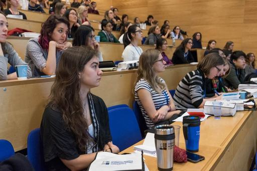
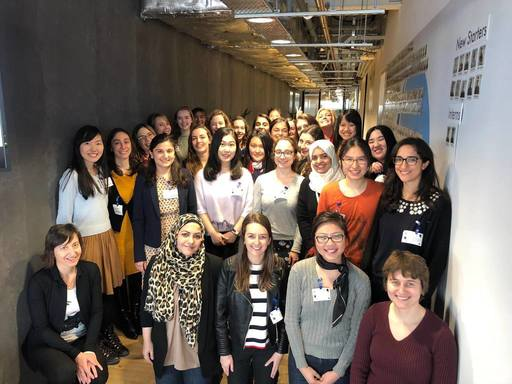
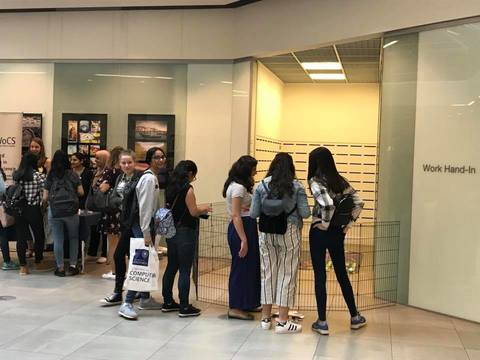
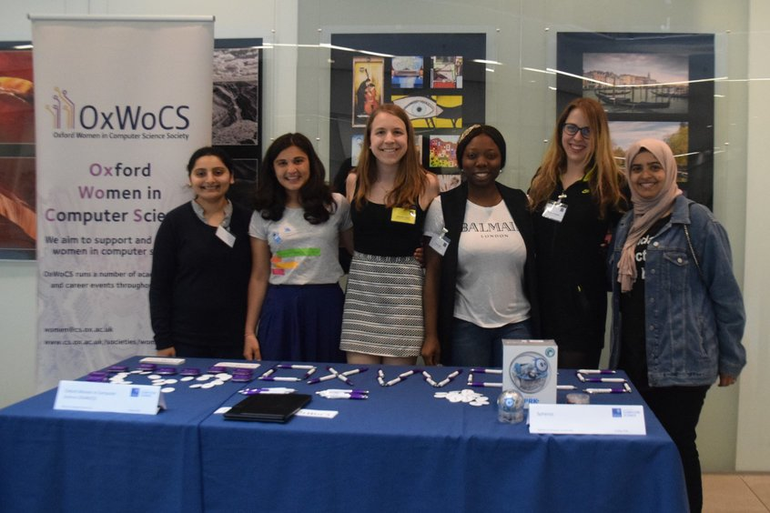
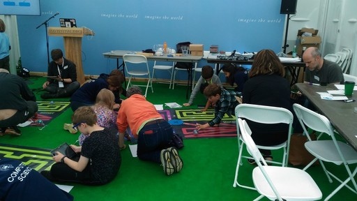
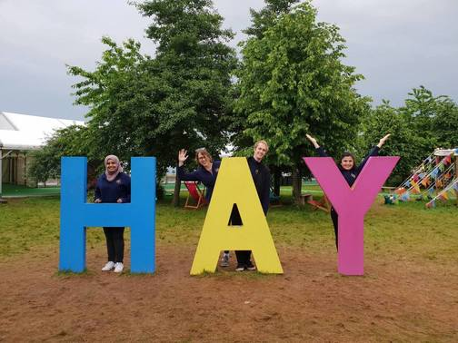

2017:18 - External Relations Coordinator / Industry Event Coordinator
As the external relations coordinator, I was responsible for liaising with different societies especially in STEM subjects to maximize collaboration and reach via increased cross-talk, joint organization of events, etc. Together with these societies, we organised a 'Welcome Social' in the Oxford Townhall at the beginning of the academic year 2017-18. We received more than 200 students and staff members at this networking social that also hosted representatives from our industrial sponsors including Google, Facebook and Visa.
In my other role as the Industry event coordinator, I was responsible for organizing social and formal events to promote interaction between students and industry. The highlight of this role was the successful organisation of a day-long industrial visit to the Google DeepMind Headquarters in London for a record high of 62 Oxford grads, postgrads and visiting students.
The year in photos:
|  |  |  |  |  |  |
|---|---|---|---|---|---|
March 2018: 5th Oxbridge Women in CS conference |
March 2018: OxWoCS visits DeepMind HQ London |
May 2018: Women in CS Day - Sphero Wokshop |
May 2018: Women in CS Day - OxWoCS Team |
May 2018: Hay science festival - Sphero coding workshop |
May 2018: Hay science festival - 'We did it!' photo |
2018:19 - Outreach/Scholarship Officer - I am in the final year of my DPhil study in 'AI for vision' and this is my second exciting year running with OxWoCS. As the outreach officer I am responsible for organising the annual networking social - an MPLS-wide welcome gathering where a host of women societies' introduce their agendas/events and industrial sponsors to the student population. Further, over the course of the year I will be involved in running a variety of workshops for technology dissemination in community at events such as University Open Days, Science Festivals.